DeepSeek部署
本文最后更新于 2025年2月6日 下午
硅基流动 API 部署 DeepSeek
官网：https://siliconflow.cn/zh-cn/
新建API密钥
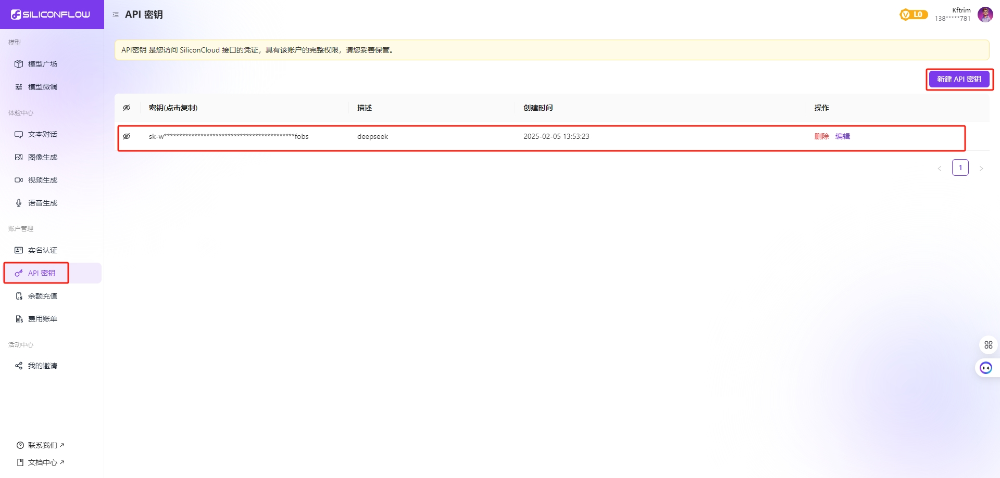在 ChatBox 里面使用
ChatBox 下载安装
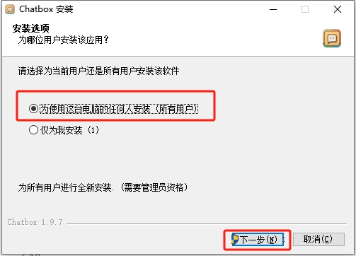 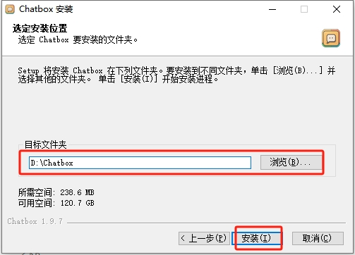配置
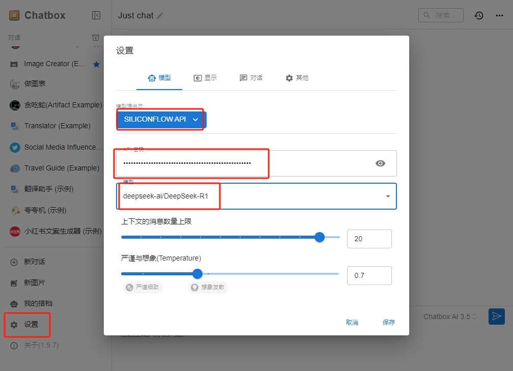使用
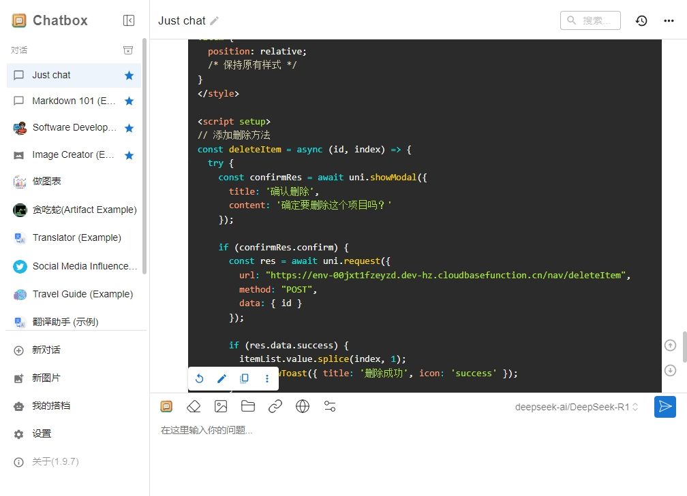在 VSCode 里面使用
下载插件 cline
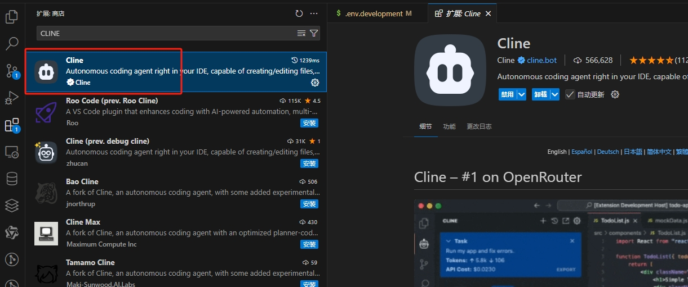配置 cline 插件
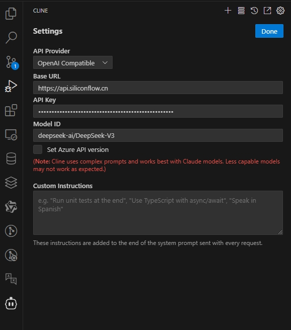 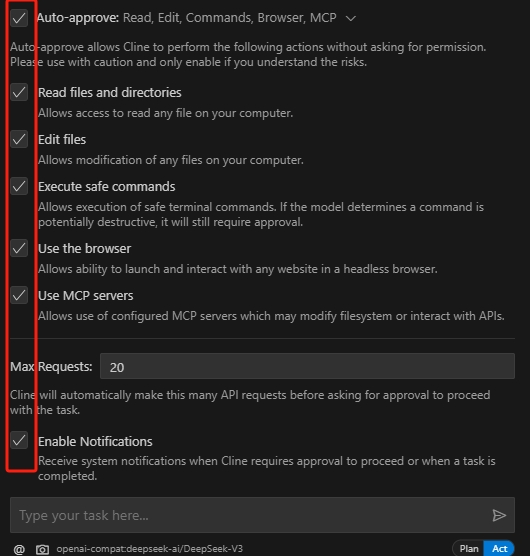使用
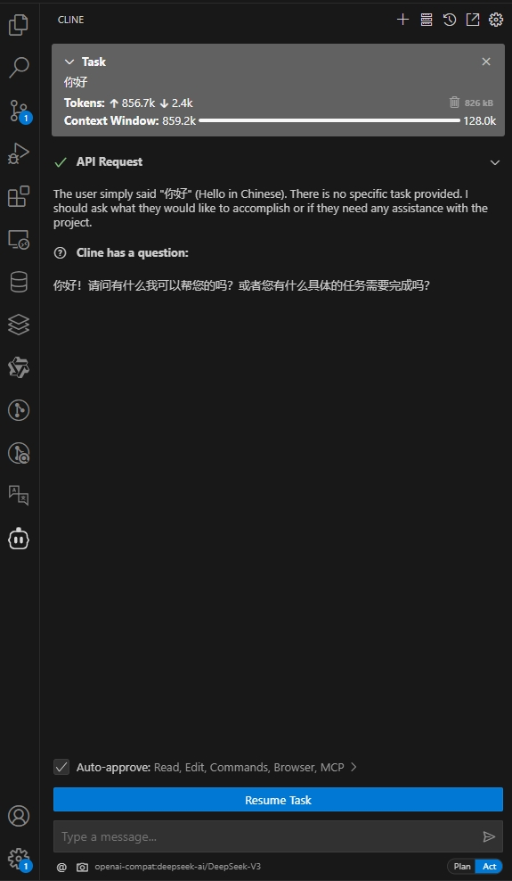Windows 本地部署 DeepSeek
下载 ollama 官网：https://ollama.com/
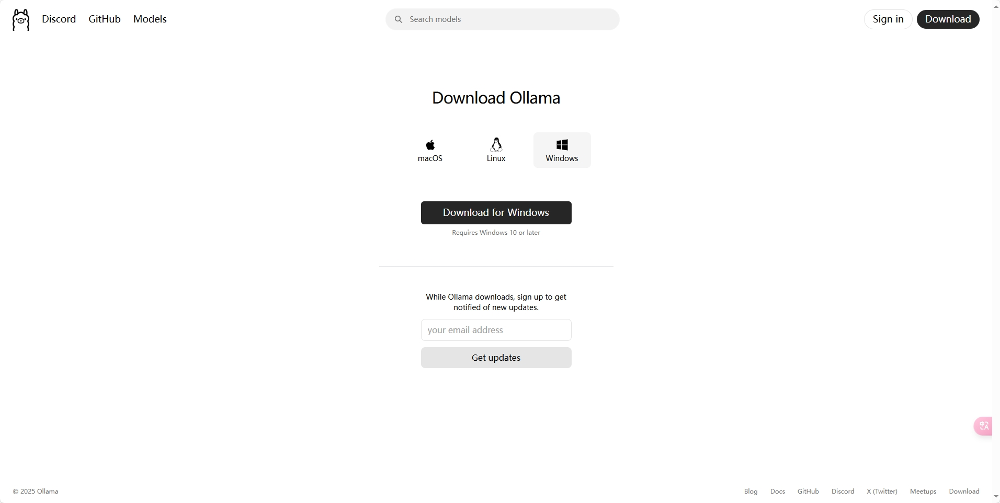安装（默认安装在 C盘）
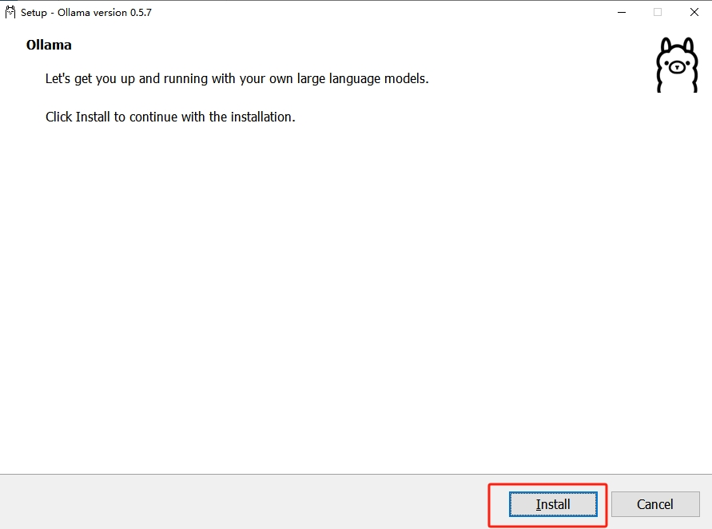迁移到 D盘
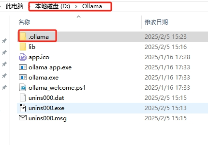将
C:\Users\XX\AppData\Local\Programs\Ollama这个文件夹移动到D盘，例如改为D:\Ollama同时，将模型文件所在的目录
C:\Users\XX\.ollama也移动到D盘，例如改为D:\Ollama\.ollama
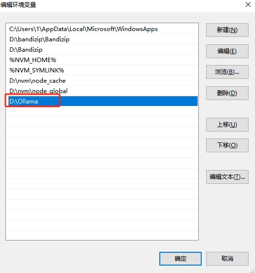 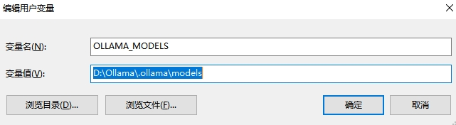修改用户变量的PATH变量，将原来的
C:\Users\XX\AppData\Local\Programs\Ollama路径更新为新的位置，即D:\Ollama在用户变量中新建一个名为
OLLAMA_MODELS的变量，设置其值为模型文件的新位置，例如D:\Ollama\models
使用命令行窗口输入 ollama 查看是否安装好（路径要在D盘 因为安装在D盘）
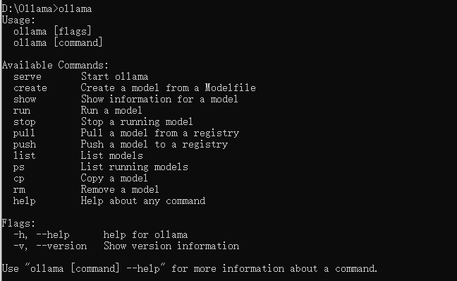在 ollama 上搜索 deepseek-r1的模型
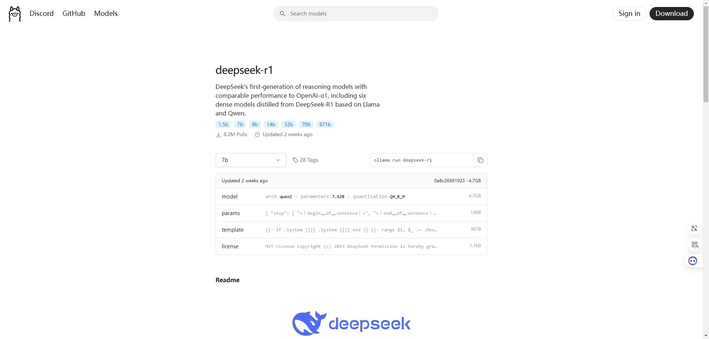选择版本下载-测试使用
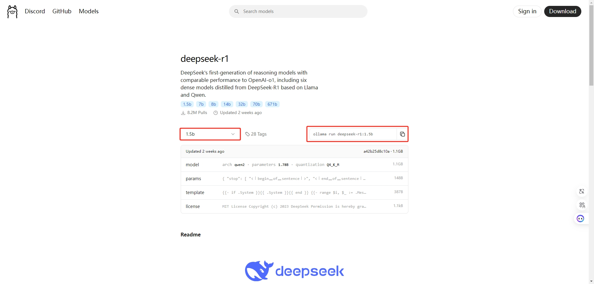 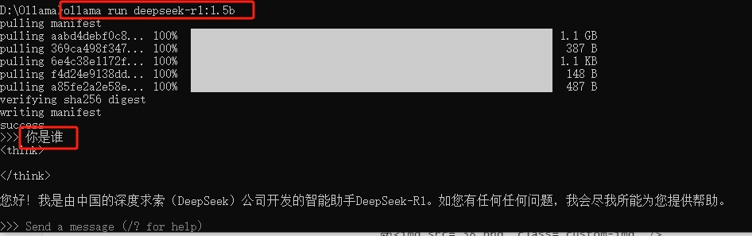在 Cherry Studio 客户端上面使用
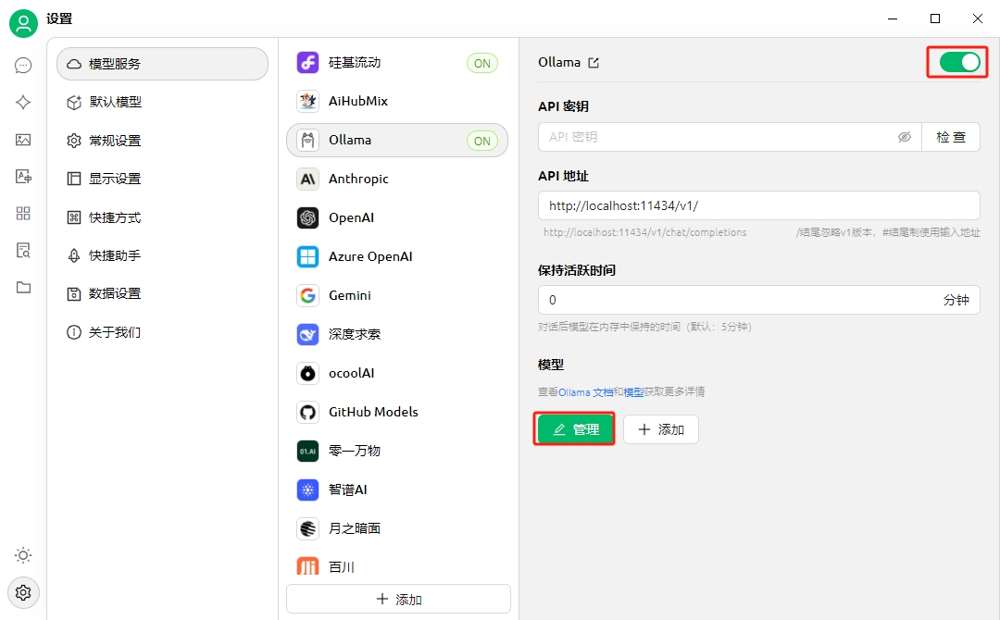 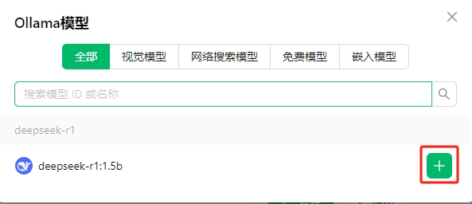 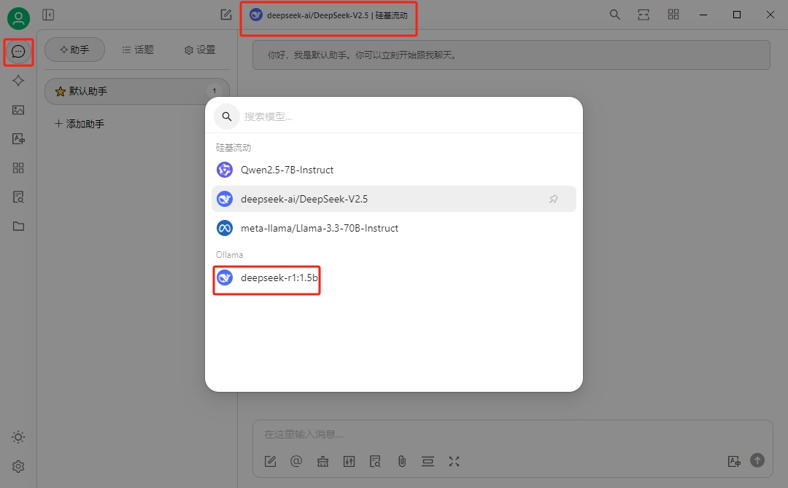 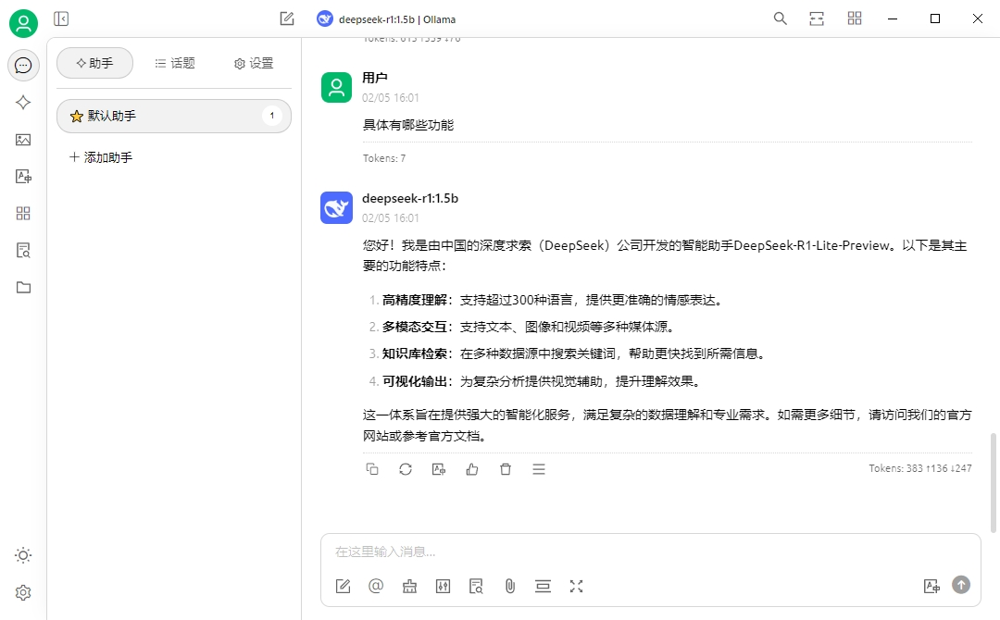Linux 服务器部署 DeepSeek R1 及远程连接
使用
ollama在linux服务器部署deepseek R1模型，并使用Chatbox客户端远程连接
安装ollama
1 | |
示例
1 | |
服务器中没有
GPU，会报警告 但是不会影响小数据测试使用
配置 ollama 外部 ip 访问
1 | |
服务重启之后查看 11434端口
1 | |
示例
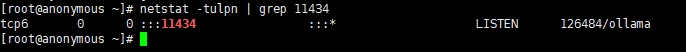测试使用浏览器访问服务器 ip 会显示 Ollama is running
如果你能够在本地机器上看到 ollama 服务正在监听端口 11434，但外部无法访问 开放端口之后再次测试
1 | |
使用 ollama 命令运行 1.5B 模型
这个模型根据自己的配置选择
ollama 模型列表：https://ollama.com/search
1 | |
服务 IP 地址
Ollama 服务将能在当前网络（如家庭 Wifi）中提供服务 可以使用其他设备上的 Chatbox 客户端 连接到此服务
Ollama 服务的 IP 地址是你电脑在当前网络中的地址，通常形式如下：
1 | |
在 Chatbox 中，将 API Host 设置为：
1 | |